スクフェス感謝祭 2015
初めてのスクフェス単独リアルイベント！
ユーザー数全世界1000万人突破を記念した様々な展示、ステージイベント、記念グッズの販売などを予定しています。
同会場内で全国大会の東京地区予選、決勝大会も開催します！
開催日時
日時：6月6日(土)・7日(日) 10:30～17:00（最終入場16：55）
会場：池袋サンシャインシティ展示ホールA-2,A-3,B,C
【入場無料】
※当日の混雑状況により、一時的に入場を制限させていただく場合もございます。予めご了承ください。
※当日の状況により最終入場のお時間が変更になる可能性がございます。
{kind=link}
「グッズ付き優先入場券（ステージ観覧応募権付）」販売のご案内
開場に先駆けて9:00よりイベントに優先入場できる日付指定の「グッズ付き優先入場券（ステージ観覧応募権付）」を販売いたします。本チケットには「ラブライブ！A2タペストリーVer.スクフェス感謝祭2015（税込2,592円・通販限定商品）」が通常の発売に先駆けて、 もれなく付属します。（タペストリーは当日会場でのお渡しとなります。配送はできませんので予めご了承くださいませ）
《チケット券種名称・価格（税込）》
6月6日（土）グッズ付き優先入場券（ステージ観覧応募権付） 3,240円
6月7日（日）グッズ付き優先入場券（ステージ観覧応募権付） 3,240円
※別途システム利用料、決済手数料、発券手数料等がかかります
《購入枚数制限》
1申込2枚まで
※グッズ引き換えについて
チケット特典の「ラブライブ！A2タペストリーVer.スクフェス感謝祭2015」の引き換えは各日16：00までを予定しております。
優先入場時間（9:00～10：30）は入場時にお1人様（チケット1枚）につき1つをお渡しします。
チケットを複数枚お持ちの方、優先入場時間外にご来場の方は16：00までにAホール及びBホール入口の特典引換所までお越しください。
来場者特典
【来場者特典に関する注意事項】
※来場特典につきましては、各日16：55まで配布を行う予定です。（閉会時間まで一般入場の待機列が解消しない場合、または配布予定数に達した場合、予定時刻よりも早く配布を終了する場合がございますのでご了承ください）
※お渡し場所についてはスタッフまでお尋ねください。
※特典のお渡しはお一人様一回限りになります。
※紛失の場合の再配布はいたしません。
※特典は数に限りがございます。十分な数量をご用意していますが、会期中に配布終了となる可能性もございますので予めご了承ください。
※特典は2日間共通になります。1日目の配布が終了しても、2日目の分は別途ご用意しています。
・「スクフェス感謝祭2015」×「ラブライブ！The School Idol Movie」コラボうちわ
「スクフェス感謝祭2015」のキービジュアルと、
6月13日(土)公開の「ラブライブ！The School Idol Movie」のキービジュアルが両面にプリントされた特製のうちわです！
{kind=link}
・「SRアルパカ」シリアルコード付きステッカー
先行配信のサポートメンバー「SRアルパカ」を入手できるシリアルコードが裏面に印字されたカードサイズステッカーです！

・ヴァイスシュヴァルツPRカード 「"ひなまつり"矢澤にこ」
6月13日(土)発売のヴァイスシュヴァルツ
[トライアルデッキ ラブライブ！ feat.スクールアイドルフェスティバル]
[ブースターパック ラブライブ！ feat.スクールアイドルフェスティバル Vol.2]
より、スクフェスのイベント報酬SRのイラストを使用したPRカードです！
{kind=link}
・「ラブライブ! School idol diary」スクフェス感謝祭2015限定小冊子
スクフェスとのコラボイベントでもおなじみの
公野櫻子先生書き下ろしノベル「ラブライブ! School idol diary」を紹介する本イベント限定の8ページの小冊子です！
{kind=link}
イベント全体に関する注意事項
- 会場付近への深夜のご来場は禁止いたします。
- やむを得ない事情や主催者側の都合により、当日のイベント内容が変更・中止になる場合がございます。
- イベント中はスタッフの指示に従ってください。従っていただけない場合は退場いただく場合もございます。
- 当日の混雑状況により、会場内の各エリアへの入場を制限させていただく場合がございます。
- 来場者同士のトラブルに関しては、主催者及び会場は一切責任を負いかねます。
- 何か困ったことがあれば、早めにお近くのスタッフか総合案内までご相談ください。
- イベント中は体調管理に十分ご留意ください。万が一気分が悪くなった場合は、早めにお近くのスタッフまでお申し出下さい。
- ご自身の荷物は、ご自身で管理してください。盗難、置き引き、紛失などに関して、主催者は一切責任を負いません。
- 他人の迷惑になるような行為はご遠慮願います。
- 会場内は禁煙です。
- 危険ですので、会場内外では走らないでください。
- 会場内で配布するものは、すべて数に限りがございます。
- イベント中、会場内では各種取材が行われております。取材時に撮影された写真、動画などが各種媒体記事などに使用される場合がございます。あらかじめご了承ください。
音ノ木坂学院 アイドル研究部 部室
AnimeJapan 2014でご好評いただいた“音ノ木坂学院 アイドル研究部 部室”をイメージした展示が帰ってきます！
「ラブライブ！」TVアニメ2期を反映した、スクフェス感謝祭2015スペシャルバージョンになって再登場しますので、是非お楽しみに♪
{kind=link}
※画像は過去に行ったAnimeJapan 2014ブシロードブースでの展示の様子です。実際の展示とは異なる場合がございます。
※AnimeJapan 2014で行ったミニドラマの放送はございません。
スクフェス全部員カード展示
これまでにスクフェスで配信されたすべての部員のカードイラストを一面に並べて展示します！
その数なんと、1000枚以上！
数多くあるイラストの中から、あなたのお気に入りの部員を見つけてくださいね♪
{kind=link}
{kind=link}
その他展示
▼フィギュア展示
アルターより発売予定のスクフェス関連フィギュアのデコマス（彩色見本）を展示します！
スクフェスの衣装の中でも特に人気が高い『ことり式雪だるま』の「南ことり」と『動物編』の「星空凛」の2体を発売前に見られるチャンスです！
協力：ALTER Co.,Ltd
▼School idol diaryノベル型パネル展示
『ラブライブ！School idol diary』風の高さ１.８ｍ、幅２mのノベル型立体パネルが登場!!
是非一緒に写真を撮ってくださいね！
協力：G's magazine編集部
▼ラブライブ！×Tカード発行コーナー
{kind=link}
ラブライブ！×Tカードがその場で発行できる！
※カード発行手数料500円（税抜）がかかります
※数に限りがございますのでお一人様２枚まで
協力：TSUTAYA
体験コーナー
スクフェスに関する体験展示を実施します！
[無料]デカスマホでスクフェスを遊ぼう！
47インチの”デカスマホ”でスクフェスを遊んでみよう！
いつもと違う大きな画面は、まるでゲームセンターみたい？！
※遊べるのは一部の楽曲のEASYモードのみとなります。
※デカスマホ用の特別なアプリのため、実際に配信されているアプリと動作が異なる場合がございます。
[有料]オリジナルフレームでプリントシールを撮ろう！
スクフェス感謝祭2015のオリジナルプリントシール機が登場！
μ'sと一緒に写真が撮れる！
撮った写真は後で携帯にも送れるよ！
プレイ料金：1回600円
{kind=link}
{kind=link}
【プリントシール機に関する注意事項】
※1回のプレイにつき、μ'sメンバーのフレーム（2種のうち1種）とカードフレーム（3種のうち1種）がランダムで自動選択され計2種類が撮影できます。
※落書き機能はご利用いただけません。
※イベント会期終了後の6/8以降【セガ池袋GiGO】【LOVELIVE! Collaboration SHOP（原宿）】にスクフェス感謝祭2015オリジナルフレームの特別仕様プリント
※会場内で販売する専用コインでのみご利用いただけます。専用コインは一度のお会計につきお一人様1枚までのご購入となります。
※グループでの撮影をご希望の場合、必ず希望者全員が揃ってから列にお並びください。途中合流はできません。
※撮影については1グループ4名～6名までを推奨していますが、当日の状況により制限をかけさせていただく可能性がございます。
※上記制限によりグループを分割する必要になった場合でも、各グループの撮影に対してそれぞれプレイ料金が発生いたしますので予めご了承ください。
※混雑時は下記のとおり撮影回数を制限させていただきます。
・2名様でお越しの場合…「2名様で1回（どちらか一方がコインを購入）」または「1名様ずつ各1回（それぞれがコインを購入）」のどちらかをお選びいただきます
・3名様でお越しの場合…「3名様で1回（どなたかおひとりがコインを購入）」「2名様と1名様に分かれて各1回（それぞれがコインを購入）」または「1名様ずつ各1回（おひとりずつコインを購入）」のいずれかをお選びいただきます
・「2名様で2回」など、複数名での連続利用は不可とさせていただきます。複数回ご利用になりたい場合には一度ご利用いただいた後、再度列にお並びください。
※混雑状況によっては、整理券として撮影されるグループの代表者の方に時間指定を記載したリストバンドを装着させていただく場合がございます。リストバンドはコイン購入時まで外さず、そのまま装着していただくようお願いいたします。
※リストバンドや専用コインを紛失した場合、再発行はいたしません。また、購入済みの専用コインについてはご返金は致しかねますのでご了承ください。
協力：フリュー株式会社
[無料]ハイスコアチャレンジに挑戦しよう♪（6/7のみ展示ホールCにて開催）
会場に設置された端末で「タカラモノズ」にチャレンジして、スクフェスの特製シールをもらおう！
難易度はEASY、NORMAL、HARD、EXPARTの4種類♪
ハイスコアが出ると、お名前とともに会場内に貼りだされます！
※6/7（日）のみ、展示ホールCにて開催します。
※ライブに失敗してもシールはお渡しします。
※特製シールは全国大会地区予選参加賞として配布したものと同じです。
{kind=link}
ステージ情報
すべてのステージイベントにつきまして、ニコニコ生放送またはYouTubeでの生中継が決定いたしました！
| 日時 | ステージ名 | 出演者 | 備考 |
| 6月6日（土） 10：40～11：10（予定） | 『スクフェス感謝祭2015開会式』 | 新田恵海（高坂穂乃果役） 飯田里穂（星空凛役） 徳井青空（矢澤にこ役） | ※このイベントに参加するには事前にステージ観覧への抽選応募が必要です。（応募は終了しました） ※ニコニコ生放送で生中継を予定しています。（配信ページはこちら） |
| 6月6日（土） 13：00～13：40（予定） | 『スクフェス感謝祭2015記念トークステージ』 | 新田恵海（高坂穂乃果役） 飯田里穂（星空凛役） 徳井青空（矢澤にこ役） | ※このイベントに参加するには事前にステージ観覧への抽選応募が必要です。（応募は終了しました） ※ニコニコ生放送で生中継を予定しています。（配信ページはこちら） |
| 6月7日（日） 10：40～12：00（予定） | 『スクフェス全国大会決勝』 | 白幡いちほ（MC） 森嶋秀太（MC） |
※このイベントは事前のステージ観覧への抽選応募は必要ありません。 ※当日の混雑状況により、ステージエリアへの入場を制限させていただく場合がございます。※ニコニコ生放送で生中継を予定しています。（配信ページはこちら） |
| 6月7日（日） 13：30～14：30（予定） | 『Game Week with Google Play スクフェス感謝祭2015』 | はじめしゃちょー（MC） 白幡いちほ（MC） 喜屋武ちあき 松下唯 仁藤萌乃 椎名ひかり ※μ’sメンバーは出演いたしません |
※このイベントに参加するには事前にステージ観覧への抽選応募が必要です（応募は終了しました） ※YouTubeで生中継を予定しています。（配信ページはこちら） |
《イベントステージに関する注意事項》
※ステージで行われるイベントはすべて、
※『スクフェス全国大会決勝』を除き、ステージエリアに入場するためには観覧整理券が必要です。（観覧整理券の応募は終了しました）
※『Game Week with Google Play スクフェス感謝祭2015』につきましては、
※やむを得ない事情によりプログラムの内容、出演者、開演時間の変更や、中止をする場合がございます。
ステージ観覧に関する注意事項
▼諸注意
・チケットに記載の開演時間までにステージエリアへご入場ください。
・開演時間を過ぎてからのご入場はお断りする場合がございます。
・紛失などいかなる理由においても、チケットは再発行いたしません。
・営利を目的としたチケットの売買、譲渡は固くお断り致します。
・不当に売買、譲渡されたチケットは無効となり、ご入場をお断りさせていただく場合もございますのでご注意ください。
・チケットの売買、譲渡におけるトラブルについては一切の責任を負いません。
・事前応募が必要な各イベントステージの立ち見エリアにつきましては、入場時に抽選を行い、ブロック内のどの場所でご覧いただくか決定いたします。
▼観覧時の注意
・公演中、周りのお客様のご迷惑になる行為を禁止いたします。両手を左右に激しく振る、回転する、腕を振り回す、上半身を反らすなどの過激な応援行為は、周りのお客様へのご迷惑や怪我、トラブルの原因となりますのでおやめください。
・スタッフの指示に従って行動してください。従って頂けない場合は、 ご退場頂く場合がございます。
・ステージエリア内でのカメラ、ビデオカメラ、MD、テープレコーダー、ICレコーダー、その他の機器での撮影、録音は禁止とさせて頂きます。携帯電話、スマートフォン、タブレット、ゲーム端末など、撮影または録音が可能な機器のご使用もお控え下さい。
・会場内でのご飲食は禁止とさせて頂きます。
・公演中、チケットに記載された指定の席・エリア以外には移動しないでください。また、自分の席の範囲からはみ出さないようご注意ください。
・イスや柵に登る、イスや柵からジャンプするなどの行為も危険ですので禁止致します。
・終演後は、スタッフの指示に従って退場して下さい。アナウンスがあるまではご自身のお席にてお待ちいただくようお願い致します。
上記のことが守られなかった場合、またはスタッフが公演の妨げになると判断した場合、係員・スタッフにより退場処分とさせて頂く場合もございます。
違反行為を見かけた方はお近くのスタッフまでお声がけください。
公演中、危険行為が頻発した場合、公演を中断または中止とする場合があります。
また、危険行為によりケガをされた場合も自己責任とし、主催者・会場・出演者は一切の責任を負いかねますので、ご注意ください。
ご来場いただきましたお客様全員がイベントを楽しんでいただけるよう、みなさまのご協力を宜しくお願い致します。
グッズ販売のご案内
◆ご購入制限数
以下の商品を除き、お一人様1会計あたり各種3個までのご購入とさせていただきます。
(制限数 個別設定商品)
・各種Tシャツ サイズ違いも同一商品といたします。 例）Mサイズ2着＋Lサイズ2着＝3着が購入上限となります
・μ'sジャージ 各種：お一人様1会計あたり各種1着まで
※サイズ違いも同一商品といたします。
※通信販売と設定が異なります。ご注意ください。
・スクフェス勧誘ポストカード「特待生＆一般生」 お一人様1会計あたり10個まで
※スクフェス勧誘ポストカード「特待生＆一般生」は物販コーナー以外でも販売を予定しております。
※物販コーナー以外でも、お一人様1会計あたり10個までとさせていただきます。
◆販売商品について
・価格はすべて税込イベント価格です。
・以下除外商品を除き、通信販売にて取扱を予定しております。
(除外品)
ラブライブ！ nepia BOXティシュ スクフェス感謝祭2015セット のうち、イベント限定BOX(入部届箱/アルパカ)
ラブライブ！ モバイルポーチ付き劇場版通常前売券
穂むらまんじゅう
・6日に完売となった商品も、7日の販売分はございます。
・不良品以外の交換返品はお承りいたしません。商品をご確認の上ご購入ください。
・やむをえない事情による販売中止や、品切れ等の場合がございます。ご了承下さい。
◆物販でのご注意事項
・
・クレジットカードや電子マネーのご利用はできません。
・スタッフの指示に従っていただけない場合、販売をお断りする場合がございます。・販売開始/終了時間は場合により変更することがあります。
・当日の状況により事前のご案内内容を変更する場合がございます。予めご了承ください。
・ラブライブ！カプセルトイは、物販コーナーでの取扱はありません。カプセルトイガチャコーナーにてご購入ください。
期間限定通信販売のご案内
通販サイト：期間限定通販 -HiBiKi EC SHOP! -
受付期間：2015年05月21日(木)15：00～2015年06月11日(木)13：00（予定）
発送予定：2015年08月上旬～中旬（予定）
◆注意事項
・こちらの通信販売は受注生産販売ではございません。期間中でも予定数に達した時点で販売終了となります。予めご了承下さい。
・以下別設定商品を除きお一人様1会計あたり、各商品5個までの購入とさせて頂きます。
(制限数個別設定商品)
ラブライブ！ μ'sジャージ 各種：お一人様1会計あたり各種1着まで ※サイズ違いは別商品扱いです。
・通販対象商品の表示は受付期間のみとなります。
新商品
| ラブライブ！ クリーナークロス スクフェス感謝祭2015 | 400円 |
| 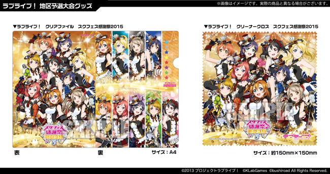 | 感謝祭のキービジュアルを使用したクリーナークロスです。 ※全国大会地区予選各会場にて先行販売いたします |
| ラブライブ！ クリアファイル スクフェス感謝祭2015 | 400円 |
| 感謝祭のキービジュアルを使用したクリアファイルです。 ※全国大会地区予選各会場にて先行販売いたします |
|
| ラブライブ！ スクフェス感謝祭2015 Tシャツ Mサイズ / Lサイズ | 各3000円 |
| 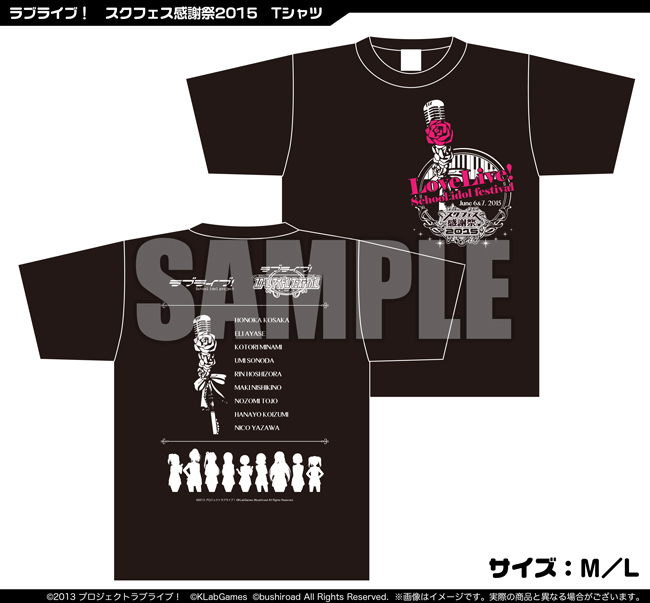 | 感謝祭のキービジュアルでμ'sメンバーが持っているマイクをモチーフにしたデザインTシャツです。2サイズご用意しています。 |
| ラブライブ！ スクフェス感謝祭2015 マイクロファイバータオル | 3000円 |
| 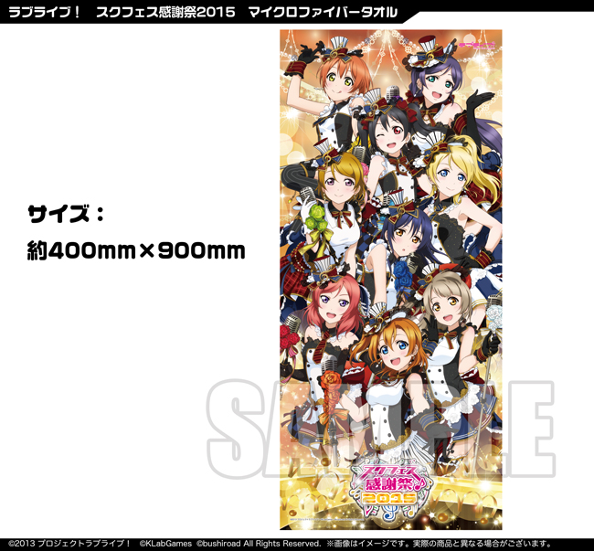 | 感謝祭のキービジュアルを使用したマイクロファイバータオルです。 |
| ラブライブ！ nepia BOXティシュ スクフェス感謝祭2015セット |
3200円 |
| 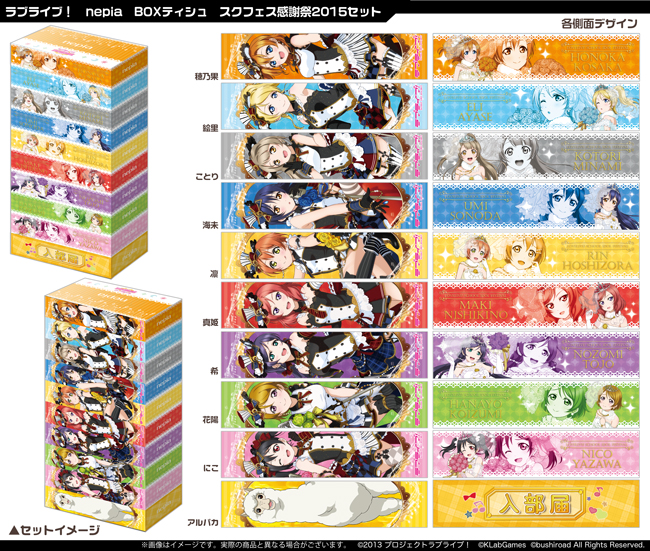 | nepiaとのコラボ商品です。10個セットは感謝祭イベント会場限定！ ※6月25日一般発売商品のBOXティシュ9種にイベント限定BOX(入部届箱/アルパカ)1種を加えたセットです |
| ラブライブ！ μ'sジャージ ・穂乃果 S-M / L-XL ・絵里 S-M / L-XL ・ことり S-M / L-XL ・海未 S-M / L-XL ・凛 S-M / L-XL ・真姫 S-M / L-XL ・希 S-M / L-XL ・花陽 S-M / L-XL ・にこ S-M / L-XL |
各6800円 |
| 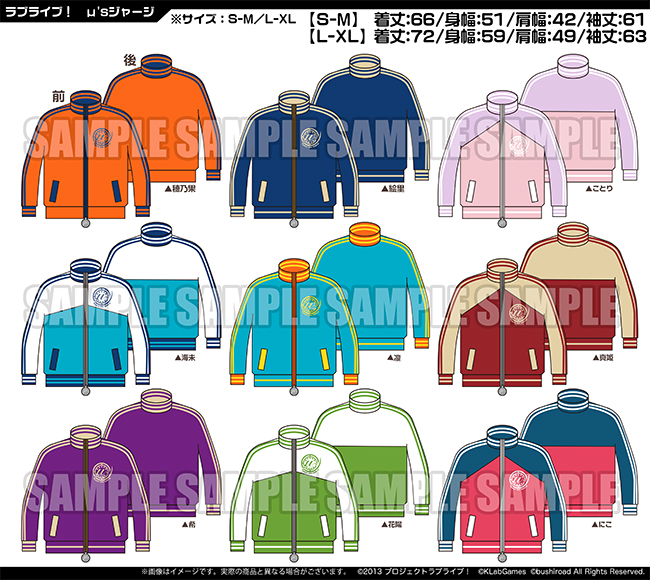 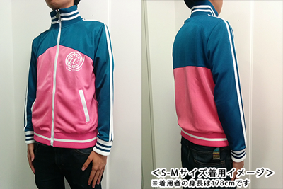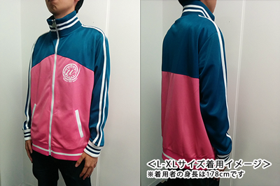  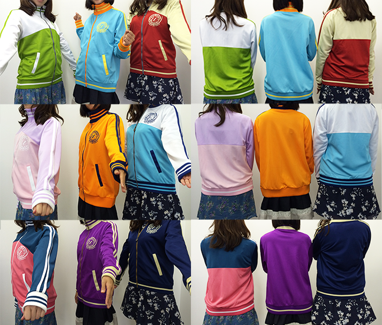 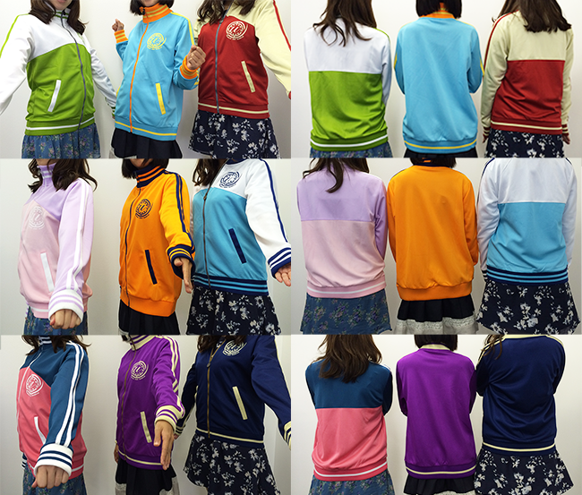 |
「10月編」のUR・SRでμ'sメンバーが着用しているジャージをイメージしました。サイズは2種類ご用意しています。 |
| ラブライブ！ レターセット | 1000円 |
| 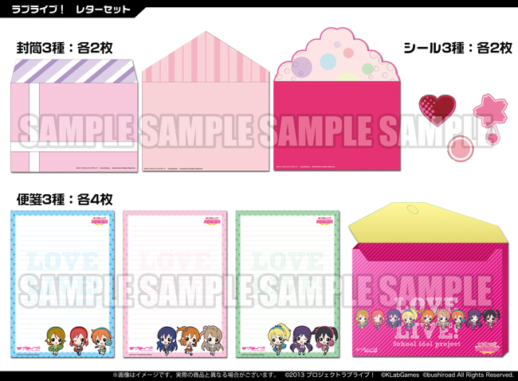 | 「特待生勧誘」「一般生勧誘」の封筒をイメージしました。μ'sメンバーのかわいい便箋とケースもセットです。 |
| ラブライブ！ ラブカストーンドロップ | 700円 |
| 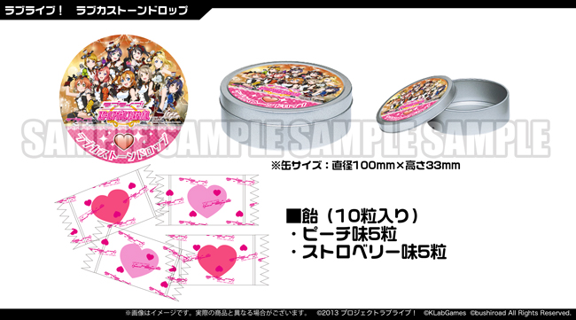 | ラブカストーンをイメージしたハート型の可愛いドロップです。特製の缶入りで、おみやげにもおすすめです。 |
| ラブライブ！ スクフェス勧誘ポストカード「特待生＆一般生」 | 500円 |
 |
リアルにスクフェスの「勧誘」体験ができる（？！）ポストカードです。中身がわからない「入部届」の封筒に、SRorURとNorURの封筒が入っていて、さらにその中にポストカードが封入されています。 1回につき「特待生」「一般生」を1枚ずつ引けるので、500円で合計4枚のポストカードが入手できます。 ※お一人様1会計あたり10回まで |
| ラブライブ！ フルグラフィックTシャツ Mサイズ / Lサイズ | 各6000円 |
| 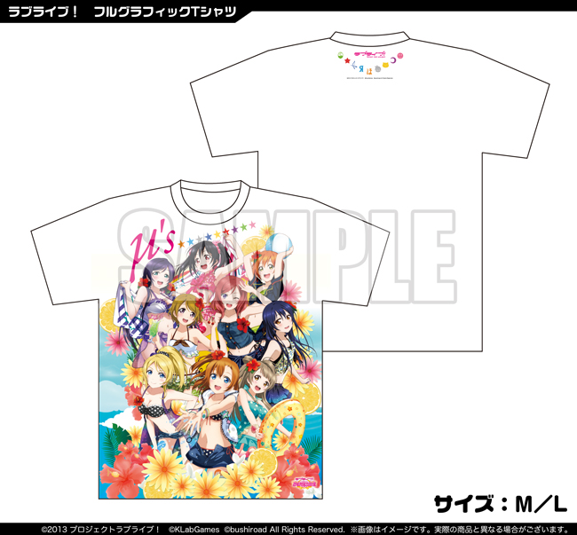 | 「8月編」UR・SRのμ'sメンバーが大集合した夏にぴったりの華やかなフルグラフィックTシャツです。 |
| ラブライブ！ マイクロファイバーバスタオルVer.5 | 6800円 |
| 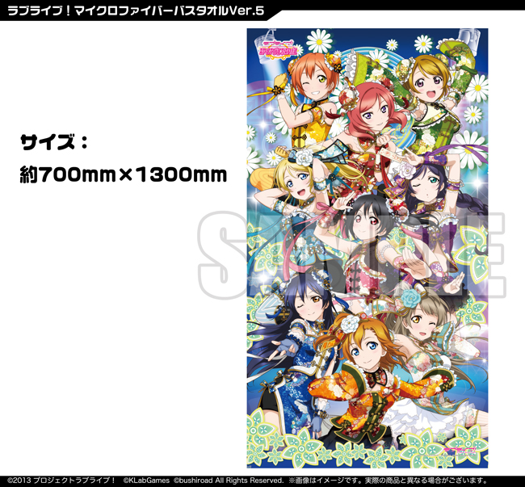 | 「チャイナ編」UR・SRのμ'sメンバーが大集合したバスタオルサイズのマイクロファイバータオルです。 |
| ラブライブ！ リール付きアクリルパスケース Ver.2 （穂乃果/絵里/ことり/海未/凛/真姫/希/花陽/にこ） |
各1600円 |
| 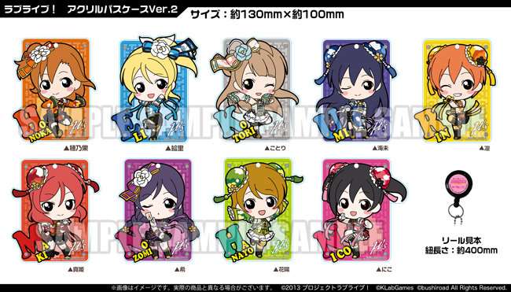 | 「チャイナ編」UR・SRのちびμ'sメンバーが可愛いアクリルパスケースです。ICカードを入れてカバンにつけるのにぴったり。 |
| ヴァイスシュヴァルツ ラブライブ！ feat.スクールアイドルフェスティバル 豪華キラキラカード9種セット | 3000円 |
| 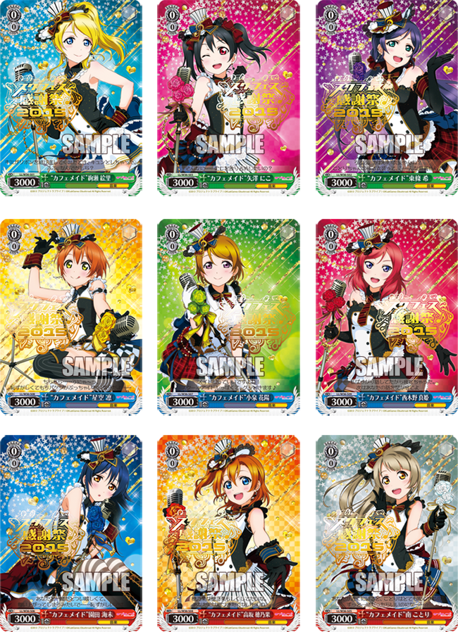 | 「ラブライブ！スクールアイドルフェスティバル」が豪華キラキラカードになって ヴァイスシュヴァルツで登場！スクフェス感謝祭2015の金の箔押しのロゴが入った豪華カード9種セットとなっています。収録カード：全9種 ・高坂穂乃果 ・絢瀬絵里 ・南ことり ・園田海未 ・星空凛 ・西木野真姫 ・東條希 ・小泉花陽 ・矢澤にこ |
{kind=link}
{kind=link}
{kind=link}
{kind=link}
{kind=link}
{kind=link}
{kind=link}
{kind=link}
{kind=link}
{kind=link}
{kind=link}
{kind=link}
{kind=link}
{kind=link}
ラブライブ！カプセルトイガチャコーナー
物販コーナーとは別に、カプセルトイガチャコーナーを特設いたします！
{kind=link}
価格：１回500円
◆ご購入制限数
お一人様１回あたり６回までとさせていただきます。
十分な数をご用意しておりますが、売り切れ等の場合はご容赦ください。
また、６日に完売となった場合も、７日分はご用意しております。
◆お願い
カプセルは専用の回収箱以外に捨てないでください。
他のゴミ箱やゴミ箱以外に捨てないようにしてください。
◆ご注意事項
・クレジットカードや電子マネーのご利用はできません。
・販売開始/終了時間は場合により変更することがあります。
・スタッフの指示に従っていただけない場合、販売をお断りする場合がございます。
・当日の状況により事前のご案内内容を変更する場合がございます。予めご了承ください。
先行販売商品・既存商品
＜先行販売商品＞
| ヴァイスシュヴァルツ トライアルデッキ ラブライブ！ feat.スクールアイドルフェスティバル | 1300円 |
| 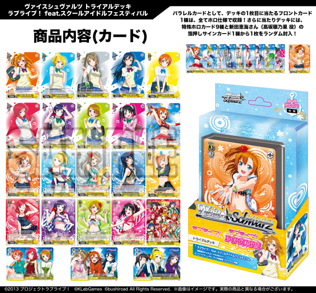 | このトライアルデッキは、買ってきてすぐに遊べるように用意された1人分のデッキと、遊び方を記載したマニュアルが入っていますので、すぐに対戦して遊ぶことができます。ゲームとして楽しむだけでなく、コレクションカードとしてもオススメです。※6/13一般発売商品の先行販売になります |
| ラブライブ！ アクリルトレーディングキーリング | 1パック600円 |
| 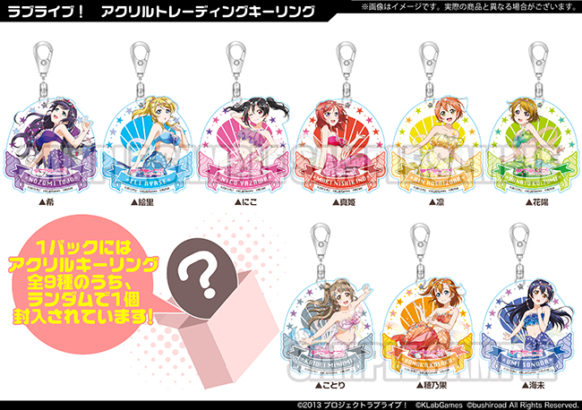 |
{kind=link}
{kind=link}
＜劇場版前売券（AnimeJapan 2015販売商品）＞
| ラブライブ！ モバイルポーチ付き劇場版通常前売券 | 3000円 |
| 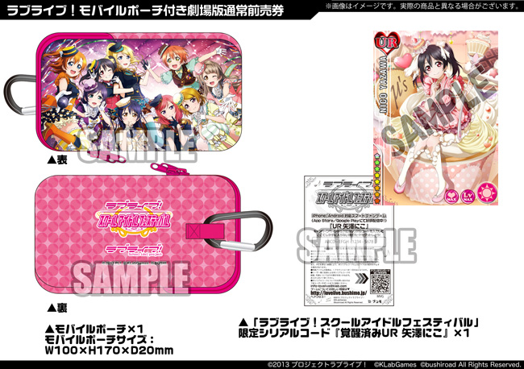 | ※残数が少なくなっておりますので、売り切れの際はご容赦ください |
{kind=link}
＜委託商品＞
| 穂むらまんじゅう | 900円 |
| 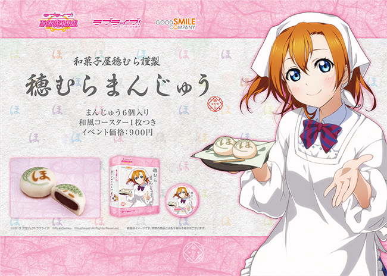 |
{kind=link}
＜発売中・発売済み商品＞
これまでに発売されたスクフェスのイラストを使用したグッズ、ブシロードのラブライブ！関連グッズの一部を販売いたします。
今ではなかなか手に入らない掘り出し物もあるかも？！
※画像は一例です
※商品によっては在庫数がとても少ないものもございます
※こちらの商品につきましては売り切れ次第販売終了となります(2日目の分は別途ご用意しておりません)
（商品の一例）
{kind=link}
{kind=link}
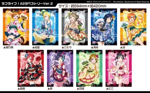 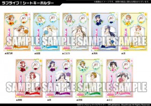
{kind=link}
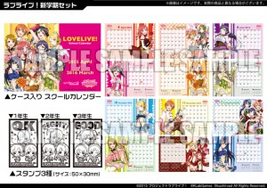
・ラブライブ！トート Part.2 イベント価格：2,000円
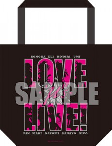
・ラブライブ！グッズセット（1年生、2年生、3年生） イベント価格 5,000円（税込）
【セット内容】
■ ミニブランケット×1
■ 携帯ストラップ×1
■ アクリルキーホルダー（凛・真姫・花陽）×各1
■ 収納BOX
{kind=link}
{kind=link}